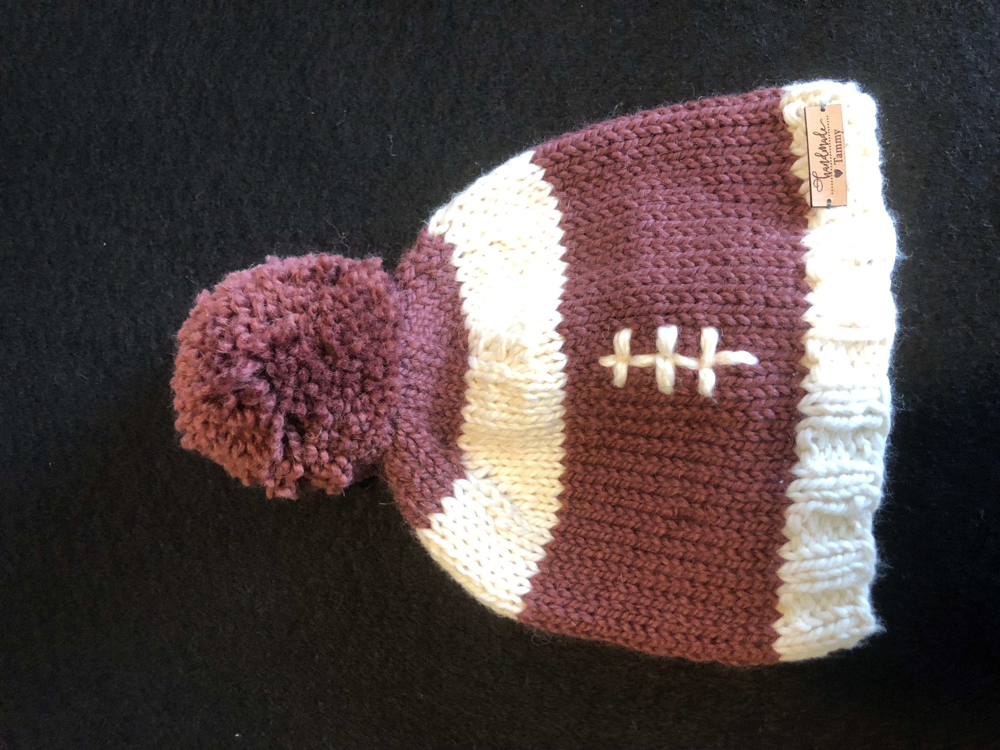
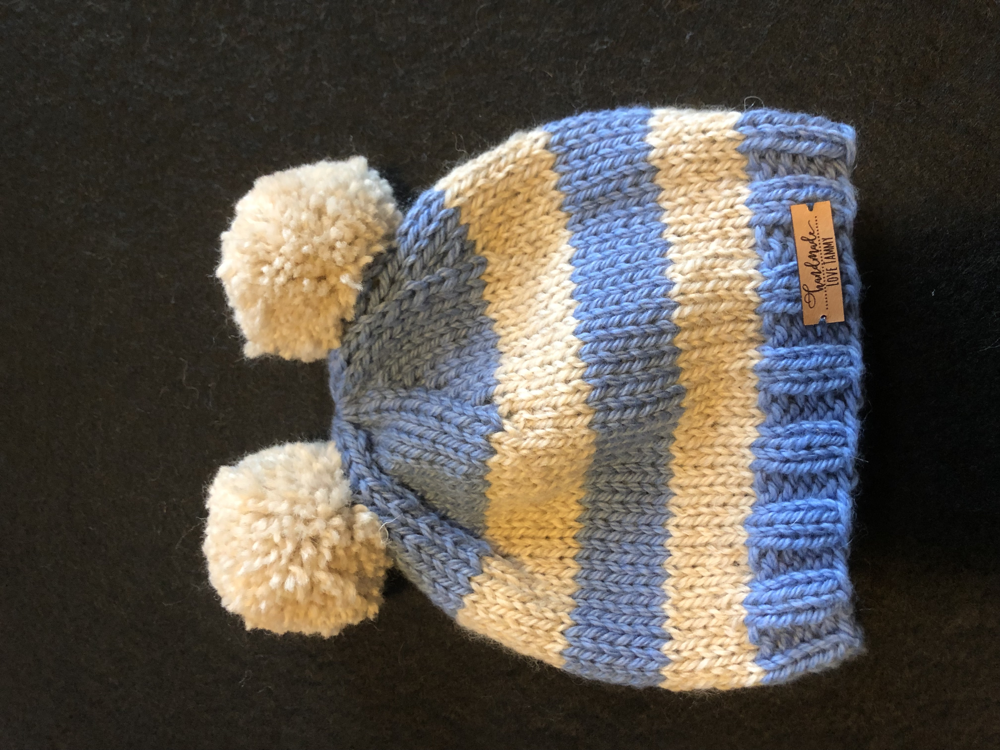
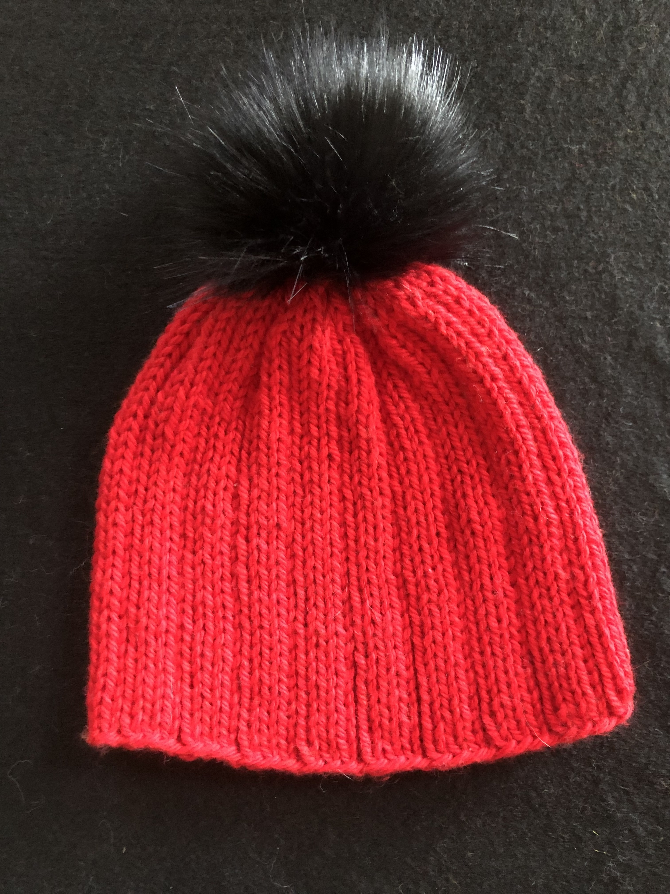
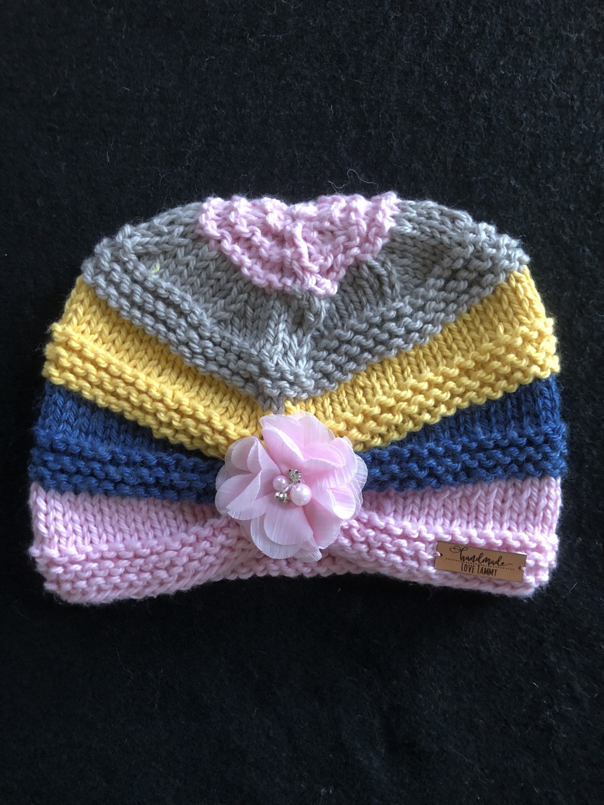

Hats





All of our products are made with high quality natural fibers such as organic cotton, wool, alpaca...
Items should be hand washed in cold water without twisting. Lay flat on a folded towel to dry.